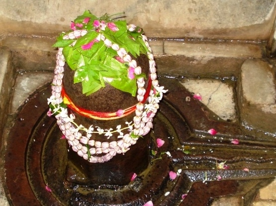

<?xml version="1.0" encoding="UTF-8"?><rss version="2.0"
	xmlns:content="http://purl.org/rss/1.0/modules/content/"
	xmlns:wfw="http://wellformedweb.org/CommentAPI/"
	xmlns:dc="http://purl.org/dc/elements/1.1/"
	xmlns:atom="http://www.w3.org/2005/Atom"
	xmlns:sy="http://purl.org/rss/1.0/modules/syndication/"
	xmlns:slash="http://purl.org/rss/1.0/modules/slash/"
	>

<channel>
	<title>Jwara Hareshwar &#8211; Varanasi Temples</title>
	<atom:link href="index.html" rel="self" type="application/rss+xml" />
	<link>../../../../../index.html</link>
	<description>Temples of Varanasi as referred to in Kashi Khand</description>
	<lastBuildDate>Thu, 19 Jun 2025 05:16:46 +0000</lastBuildDate>
	<language>en-US</language>
	<sy:updatePeriod>hourly</sy:updatePeriod>
	<sy:updateFrequency>1</sy:updateFrequency>
	<generator>https://wordpress.org/?v=4.6.29</generator>
	<item>
		<title>JWARA HARESHWAR</title>
		<link>../../../../../shiva-temples/jwara-hareshwar/index.html</link>
		<pubDate>Sun, 09 May 2010 09:41:19 +0000</pubDate>
		<dc:creator><![CDATA[admin]]></dc:creator>
				<category><![CDATA[Jwara Hareshwar]]></category>
		<category><![CDATA[Other Shiva Temples (E-K)]]></category>
		<category><![CDATA[Shiva Temples]]></category>
		<category><![CDATA[jwara]]></category>
		<category><![CDATA[kedar ghat]]></category>
		<category><![CDATA[prahlad]]></category>
		<category><![CDATA[teerth]]></category>

		<guid isPermaLink="false">../../../../../p=338.html</guid>
		<description><![CDATA[On a request by Goddess Parvati, Lord Shiva narrated the various deities/Shiv Lings/Teerths (Sacred Ponds) spread over the expanse of Kashi. (Kashi Khand, Chapter 97). Towards the east of Gopreksheshwar, devotees can find Jwara Hareshwar Ling (referred to as Vijwarar in Kashi Khand). Devotees who are running high fever get rid of their ailment by [&#8230;]]]></description>
				<content:encoded><![CDATA[<p>On a request by Goddess Parvati, Lord Shiva narrated the various deities/Shiv Lings/Teerths (Sacred Ponds) spread over the expanse of Kashi. (Kashi Khand, Chapter 97).</p>
<p>Towards the east of Gopreksheshwar, devotees can find Jwara Hareshwar Ling (referred to as Vijwarar in Kashi Khand). Devotees who are running high fever get rid of their ailment by worshipping Jwara Hareshwar.</p>
<p>&nbsp;</p>
<p></p>
<p style="text-align: center;">(<strong><span style="text-decoration: underline;">JWARA HARESHWAR)</span></strong></p>
<p>One point needs to be mentioned here.  When Kashi Khand was conceived and even after a long time when it was actually written, medical science had not at all made any progress.  Any fever was considered to be serious because in those days, people used to follow strict regimen of exercise, diet, fasting etc. Most of the people were healthy and with the human body’s immune system taking care of any external attack, only a few people used to fall sick.  If at all they fell sick, it was much beyond mild ailment.</p>
<p>&nbsp;</p>
<p><strong>&#8212;&#8212;&#8212;&#8212;&#8212;&#8212;&#8212;&#8212;&#8212;&#8212;&#8212;&#8212;&#8212;&#8212;&#8212;&#8212;&#8212;&#8212;&#8212;&#8212;&#8212;&#8212;&#8212;&#8212;&#8212;&#8212;&#8212;&#8212;&#8212;&#8212;&#8212;&#8212;&#8212;&#8212;-</strong></p>
<p><strong> </strong></p>
<p><strong>Kashi Khand, Chapter 97, Shlok 13</strong></p>
<p><strong> </strong></p>
<p><strong>गोप्रेक्षात्पूर्वदिग्भागे लिङ्गं वै विज्वरं स्मृतम्</strong></p>
<p><strong>तस्य सम्पूजनान्मर्त्यो विज्वरो जायते क्षणात्</strong></p>
<p>&nbsp;</p>
<p><strong>There is a ling named Vijvara towards the east of Gopreksha. By worshiping this holy ling, the devotee becomes free from fever in a moment. </strong></p>
<p><strong> </strong></p>
<p><strong>&#8212;&#8212;&#8212;&#8212;&#8212;&#8212;&#8212;&#8212;&#8212;&#8212;&#8212;&#8212;&#8212;&#8212;&#8212;&#8212;&#8212;&#8212;&#8212;&#8212;&#8212;&#8212;&#8212;&#8212;&#8212;&#8212;&#8212;&#8212;&#8212;&#8212;&#8212;&#8212;&#8212;&#8212;&#8212;</strong></p>
<p>&nbsp;</p>
<p>In the present day environs, with medical advancement and diagnostic and pathological facilities available, people may not attach much importance to mild fevers etc.</p>
<p><strong><span style="text-decoration: underline;">LOCATION OF JWARA HARESHWAR</span></strong></p>
<p>Jwara Hareshwar is located at J.6/85, Jaitpura, on the way to Skanda Mata temple.  Devotees can reach this place by rickshaw via Jaitpura Police station. Skanda Mata temple is quite famous.  There is another temple No. Ck.2/4, Patani Tola, where people claim that Jwara Hareshwar is located.  However, Pandit Kedarnath Vyas who has done extensive research has given the Jaitpura address for this temple.</p>
<p>The compiler personally enquired at the Jaitpura Jwara Hareshwar temple and was advised that even now devotees who are afflicted with fever etc., (despite consuming medicines) pray to Lord Jwara Hareshwar and get quick relief.</p>
<p>One point needs to be mentioned here.  According to the direction mentioned in Kashi Khand, Jwara Hareshwer is located to the east of Gopreksheshwar (Lal Ghat, Machhodari/Gai Ghat).  Towards the east will be the area encompassing Prahlad Ghat, Trilochan and River Ganga.</p>
<p>Jwara Hareshwar at Jaitpura falls to the west and the temple of the same name at Patani Tola would fall to the South.  One reason for this anomaly could be that on account of invasion and destruction of temples, some Shiv Lings may have been shifted away from their original place, after Kashi Khand was actually written.  There have been historic evidences of various temples being destroyed and constructed at other sites.</p>
<p>So, the devotees should get a clear picture and not get confused.</p>
<p>&nbsp;</p>
<h3><strong>Please watch our YouTube Video about Jwara Hareshwar at following Link</strong></h3>
<p>&nbsp;</p>
<p><a href="https://www.youtube.com/watch?v=iyIiP3ax344&amp;t=6s">https://www.youtube.com/watch?v=iyIiP3ax344&amp;t=6s</a></p>
<p>&nbsp;</p>
<p><strong><span style="text-decoration: underline;">TYPES OF POOJA</span></strong></p>
<p>The temple remains open from 04.00 a.m. to 01.00 p.m. and from 03.00 p.m. to 09.00 p.m.  Aarties are conducted at 06.00 a.m. and 07.00 p.m.</p>
<p>&nbsp;</p>
]]></content:encoded>
			</item>
	</channel>
</rss>
